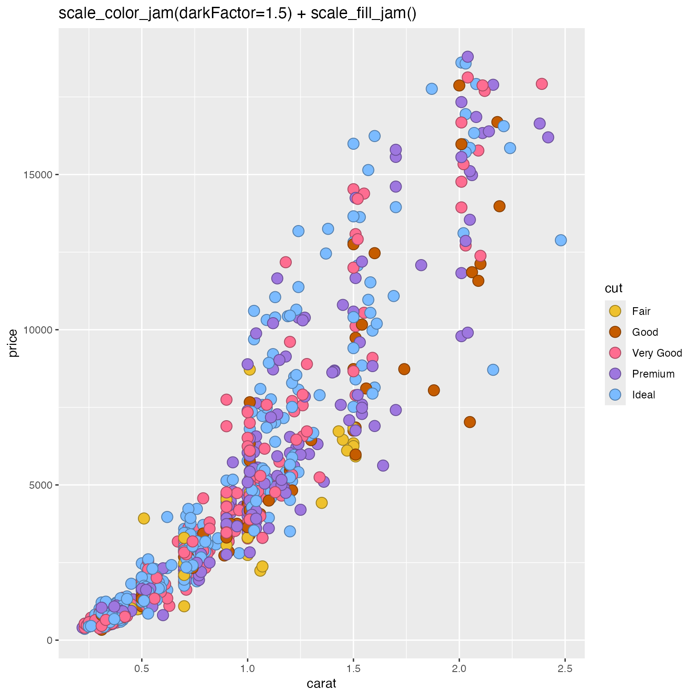

Apply rainbowJam categorical color fill to a ggplot2 object
Source:R/colorjam-ggplot2-themejam.R
scale_fill_jam.RdApply rainbowJam categorical color fill to a ggplot2 object
Arguments
- ...
additional arguments are passed to
ggplot2::discrete_scale().- type
characterstring indicating the colors are sequential"seq", and is passed tocolorjam::jam_pal().- palette
integervalue indicating the categorical palette to use, intended to provide variety in the color assignment. (Not yet implemented.)- direction
integerindicating whether to reverse the color assignment, either1for the default forward assignment, or-1for reverse assignment. Any negative value will reverse the colors.- invert
logicalindicating whether to return corresponding contrasting colors, for example for text labels, typically either"white"or"black"as defined byjamba::setTextContrastColor().- darkFactor, sFactor
numericpassed tojamba::makeColorDarker()for optional adjustment of the color, by darkness and saturation, respectively. Intended when usingscale_color_jam()andscale_fill_jam()where you want the color value to be lighter or darker than the fill color, a useful effect for outlines.- darken
logicalindicating whether to apply default values fordarkFactorandsFactorto darken the resulting colors.- alpha
numericvalue indicating the alpha transparency, on a scale of 0 (transparent) to 1 (non-transparent).- useGrey
integervalue between 0 and 100 indicating the grey value, as sent tojamba::setTextContrastColor(), used only wheninvert=TRUE.
Details
This function provides a function in the format scale_fill_*
to be applied to ggplot2 objects. It can provide a more visibly
distinct set of categorical colors than ggplot2::scale_fill_hue().
See also
Other colorjam ggplot2:
jam_pal(),
scale_color_jam(),
theme_jam()
Examples
if (jamba::check_pkg_installed("ggplot2")) {
dsamp <- ggplot2::diamonds[sample(nrow(ggplot2::diamonds), 1000),];
d <- ggplot2::ggplot(dsamp,
ggplot2::aes(carat, price)) +
ggplot2::geom_point(
ggplot2::aes(colour=cut, bg=cut),
pch=21,
size=4);
print(d +
scale_color_jam(darkFactor=1.5) +
scale_fill_jam() +
ggplot2::ggtitle("scale_color_jam(darkFactor=1.5) + scale_fill_jam()"));
print(d +
scale_color_jam(darken=TRUE) +
scale_fill_jam() +
ggplot2::ggtitle("scale_color_jam(darkFactor=1.5) + scale_fill_jam()"));
}
